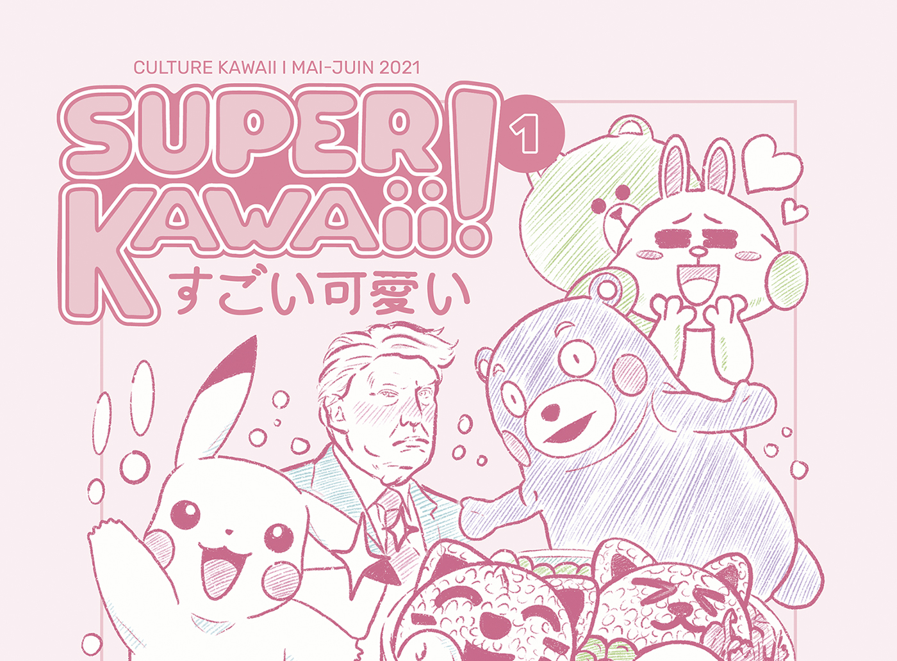

MÉMOIRE
Super Kawaii
Vous vous souvenez surement tous d’un spot TV japonais, montré par un ami ou partagé sur vos réseaux sociaux, qui vous a marqué, parce qu’il était drôle, déjanté ou complètement décalé par rapport à ce que l’on a l’habitude de voir en Occident.
C’est exactement pour cela que je me suis intéressée à la communication visuelle au Japon dans le cadre de mon mémoire. Je me souvenais surtout de leurs spots publicitaires aussi absurdes que délirants, sonores et colorés pour certains, et je voulais découvrir qu’est-ce qui pouvait différer entre la culture occidentale et la culture orientale pour que le regard publicitaire soit aussi différent.
J’ai commencé à faire des recherches assez larges sur le Japon et sa communication visuelle, et rapidement j’ai dérivé vers un nouvel axe. J’ai appris que l’armée japonaise communiquait avec des affiches d’anime. Je me suis dit « non, c’est impossible. C’est un canular ». Et je les ai trouvées. Cela m’a orientée vers un phénomène quasi omniprésent dans le pays du soleil levant. Le Kawaii.


Apparu dans les années 70, le terme kawaii signifiait à l’origine “ce qui provoque de la pitié, ce qui est navrant” mais il est maintenant très proche des mots « mignon » et « attendrissant » de notre vocabulaire. Néanmoins, il en diffère car il est rattaché à l’état psychologique dans lequel on se trouve à la vue d’une chose kawaii, c’est-à-dire, le sentiment d’enthousiasme et le désir de rapprochement que nous ressentons plutôt qu’à la volonté de protection. Par exemple, un sourire peut être qualifié de kawaii.
De plus, le kawaii est éloigné du concept de jeunesse ou de beauté classique. En effet, un objet inanimé, E.T., un bouledogue ou même Donald Trump peuvent être qualifiés de kawaii, car au Japon, les petites imperfections, comme les dents de travers, correspondent à ce qualitatif. C’est quelque chose qui me fait beaucoup pensé au principe du kintsugi, l’art traditionnel japonais qui met en valeur les fissures d’un vase, plutôt que de les camoufler. Le kawaii ne se limite pas à la perception physique mais s’étend jusqu'à la manière d’être, d’agir.
C’est un phénomène qui s’est exporté dans le monde entier, avec plus ou moins d’appropriations, de modifications. L’image que l’on en a en France est assez déformée, très stéréotypée au final. On a tendance à en rire, à minimiser son influence. Pourtant, au Japon, le kawaii envahit les lieux publics, les espaces de communication, les émissions de TV, la mode, les produits de consommation, et finalement le quotidien de ses habitants. J’ai voulu alors observer la force du kawaii et ses effets, à travers deux problématiques :
« Comment le mignon peut-il avoir un impact en communication ? »
« Comment le mignon contribue-t-il à définir toute une société ? »

Le travail sur le schéma heuristique a été un rouage important de ma réflexion. Il m’a permis de mettre en lumière trois domaines dans lequel le kawaii s’illustrait, et qui le permettait de s’ancrer plus profondément dans la société japonaise. C’est grâce à ce schéma que j’ai pu ainsi mettre en évidence les aspects politiques, commerciaux et intra-sociaux du kawaii.
Aussi au cours de cette étape, je me suis davantage projetée dans mon objet mémoire, en élaborant une ébauche d’identité graphique, et en choisissant un format de magazine, qui allait me permettre d’établir plusieurs lectures parallèles.


J’ai choisi de guider mon discours majoritairement par des affichages et des visuels publicitaires, qui inondent les rues japonaises, les transports en commun… afin de réinjecter l’environnement visuel des Japonais citadins dans ce magazine. Je voulais créer une vraie immersion dans l’esthétique kawaii.
Ours
Directeur de la publication,
Direction de mémoire
Éric Cattelain
Direction artistique,
Création et Rédaction
Nedjma Tafforin
Impression
Pixartprinting
Via 1° Maggio,
830020 Quarto d’Altino VEITALIA
Papiers
Ce numéro est imprimé sur papier Rembrandt non couché texturé 120g/m2 (intérieur).
Couverture imprimée sur papier Underwood Woodstock betulla 260g en CMJN.
Typographies
Ce numéro est composé avec les caractères :
Rubik, dessiné par Philipp Hubert et Sebastian Fischer pour la fonderie Hubert & Fischer, disponible sur fonts.google.com
Avenir Next, dessiné par Adrian Frutiger et Akira Kobayashi
pour la fonderie Linotype, disponible sur fonts.com.
Remerciements
Je remercie Éric Cattelain, pour son suivi et la réflexion qu’il m’a apporté tout le long de mon mémoire. Je remercie Caroline Tafforin, Hugo Moreau et Morgane Barcelon--Madrange, pour leurs nombreuses relectures, leurs corrections, leurs conseils avisés et leur soutien moral. Enfin, je remercie Vincent Guernevé.